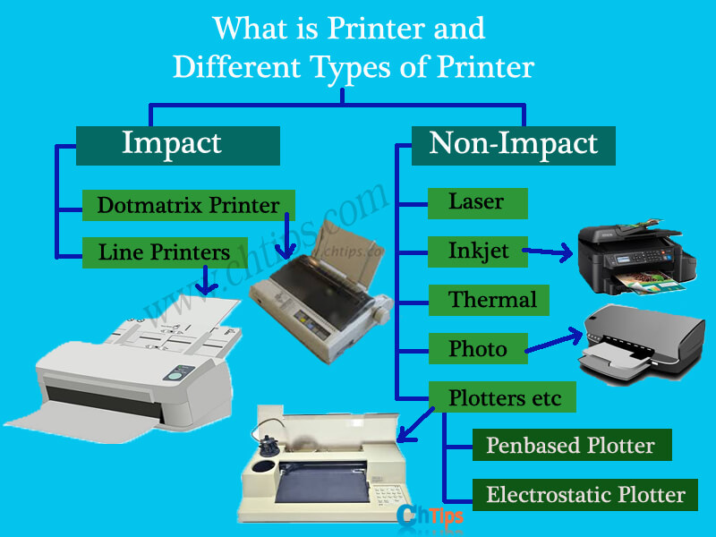

Types of Printers
Inkjet Printers: Ideal for high-quality color printing.
Laser Printers: Faster and more efficient for bulk printing.
3D Printers: Used to create physical objects from digital models.
